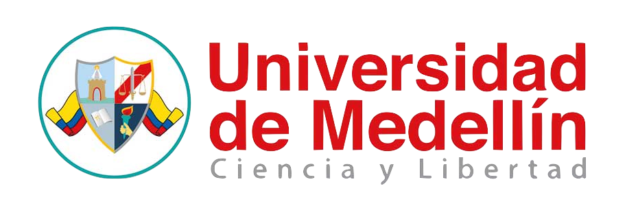

CALL FOR PAPERS, INTERNATIONAL SEMINAR ON COMPUTER SCIENCE, SICC-2018
The purpose of the International Seminar on Computer Science (SICC) is to promote research and scientific exchange between professors, researchers, students, and professionals in computer sciences and its related areas. On its 11th version, SICC-2018 will continue the tradition of previous seminars with technical paper presentations, invited speakers, workshops, tutorials, poster sessions and guest speakers with extensive experience in the field.
SICC – 2018 will be held on October 10, 11 and 12, 2018, in Medellin (Colombia). In this call for submissions we welcome contributions related to any aspect of computer science technology, experience, methodology and theory. Our interpretation of the field is inclusive and broadly conceived.
Topics
SICC-2018 welcomes submissions reporting research that advances computer science as a broadly conceived field. The conference scope is divided into four tracks: software engineering; artificial intelligence; knowledge management; automation and telecommunications. Keywords of the topics considered on each track are presented below (keywords are intended to be illustrative, not restrictive):�
Track 1: Software engineering
- The software process
- Software engineering practice
- Agile software development
- Architectural design and frameworks
- Design thinking
- Software maintenance and testing
- Languages and formal methods
- Software engineering decision making
- Knowledge based systems
- Mobile applications
- Software visualization
- Parallel, distributed and concurrent systems
- Education of software engineering
Categoría 2: Inteligencia artificial
- Pattern recognition
- Automated reasoning and inference
- Multiagent systems
- Heuristic search
- Machine learning
- Computer vision
- Knowledge representation
- Natural language processing
- Robotics
- Robotics in education
- Sentiment Analysis
- Computational linguistics
- Language generation and learning
- Machine translation
- Speech recognition and understanding
- Natural language processing
- Information retrieval and extraction
Track 3: Knowledge management
- Web 2.0
- Business intelligence
- Information security
- Digital libraries
- Organizational learning
- Information visualization
- Data mining
- Data analytics
- Social network analysis
- Big data
Track 4: Automation and Telecommunications
- Sensors
- Modeling of systems and simulation
- SCADA
- Instrumentation networking
- Control systems
- Antennas
- Mobile computing
- Sensor and actuator networks
- Internet of things
- Cloud computing
- Cybersecurity and cryptography
- Industry 4.0
- Precision agriculture
Type of submissions and publication
Long papers
Long paper submissions must describe substantial, original, completed and unpublished work. They may consist of up to 5.000 words of content (excluding title, summary, keywords and references). Long papers will be presented orally at the seminar.
The top rated long papers will be published in Ingenierías journal and a select set of the top-rated papers will be published in RISTI (Revista Ibérica de Sistemas e Tecnologias de Información), according to the peer review rating. The rest of accepted papers will be published in the seminar proceedings. All accepted papers must be presented at the seminar to appear in the proceedings or in one of the journals.
Authors of long papers selected to be published in RISTI will be required to re-structure the manuscript attending the journal guidelines and will have to pay US$ 70 for article publishing charges.
Short papers
SICC-2018 also accepts short papers. Short paper submissions must describe original and unpublished work. A short paper is not a short version of a long paper, instead, short papers are those that can cover a subject in a few pages. Some kinds of short papers are a small, focused contribution, work in progress, a negative result, a case study or an interesting application.
LShort papers may consist of up to 2.500 words of content (excluding titles, summary, keywords and references). Short papers may be presented orally or in a poster session, as determined by the program committee. The decisions about the presentation format will be according to the nature rather than the quality of the work. While short papers will be distinguished from long papers in the proceedings, there will be no distinction in the proceedings between short papers presented orally and as posters. All accepted short papers must be presented at the seminar to appear in the proceedings.
Authors of short papers selected to be presented as a poster will receive instructions about poster format that they must follow to present the poster at the seminar.
Author Guidelines
Author Guidelines
As the reviewing will be blind, papers must not include authors’ names, affiliations, acknowledgments, funding, assistance or pointers to supplemental material on the web. When referring to their own work, authors should use the third person, rather than the first person. For example, say “Previously, Carl et al [2] showed that…,” rather than “In our previous work [2] we showed that…”
Papers should not be published or submitted to any other conference or journal for publication. Papers that overlap significantly in content or in results with documents published elsewhere will not be accepted
Reviewers will be matched to submissions based on research expertise and interest. Authors will have opportunity to respond to initial reviews.
Deadlines
All deadlines are 23:59:00 Colombian UTC-5:00.
- Paper submission deadline: June 3, 2018
- Paper decision notification: July 15, 2018
- Camera-ready final manuscripts: August 26, 2018
- Payment deadline: September 16, 2018
- Seminar: October 10, 11 and 12, 2018
Contact
Please direct your questions to Lorena Cardona -
lcardona@udem.edu.co